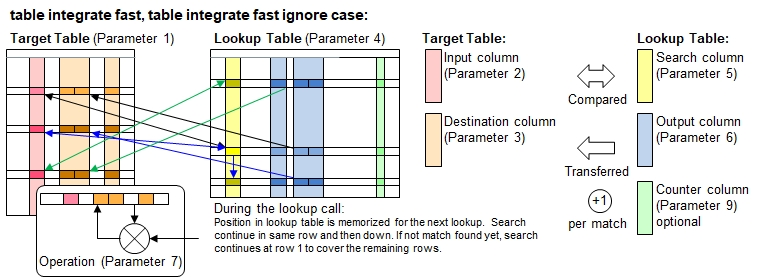

Function Names
table integrate fast, table integrate fast ignore caseDescription
This function combines the lookup strategy from table lookup fast() with the data integration features of table integrate().
This function works very similarly like table integrate top down(), with the only difference that the matching row number in the lookup table
will be memorized. For the next row in the target table, the lookup proccess continues on that memorized row. In there is no match in the
remaining part of the table, then the lookup continues with a 2nd round, namely starting with the 1st row until a matching row has been
identified.

Call as: procedure or function
Restrictions
Indirect parameter passing is disabled
Parameter count
6 - 9 (For parameter description and return values: see table integrate() )
Examples
table initialize( lookup,
{ { Names, Sports, Scores },
{ Abel, tennis, 10 }, { Bea, squash, 14 },
{ Chuck, racquetball, 13 }, { Dan, tennis, 8 },
{ Eva, squash, 9 }, { Finn, tennis, 12 },
{ Gini, racquetball, 12 }, { Hugo, squash, 11 } } );
table initialize( target, {{ Sport, Name, Score 1, Score 2, Score 3, Score 4 },
{ racquetball, "", 5, 100, 12 },
{ squash, "", 5, 100, 12 }, // Lookup table: Squash entry is below racquetball
{ racquetball, "", 5, 300, 10 }, // Looks up Gini's score
{ racquetball, "", 5, 300, 10 }, // And again (same row polled)
{ tennis, "", 5, 100, 12 } } );
// Picks the 1st match and integrates the results
count[] = table integrate fast( target, Sport, { Name, Score 1 .. Score 4 },
lookup, Sports, { Names, 4:Scores }, { overwrite, add, sub, max, average }, true, Counter );
echo("Lookup table polled:");
table list( lookup );
echo("Note: 2nd requcketball search returns Gini and not Chuck because Eva/squash was looked up before");
echo("Target table after lookup (", count[], " items found):");
table list ( target );
Output
Lookup table polled:
0 : Names | Sports | Scores | Counter
1 : Abel | tennis | 10 | 1
2 : Bea | squash | 14 |
3 : Chuck | racquetball | 13 | 1
4 : Dan | tennis | 8 |
5 : Eva | squash | 9 | 1
6 : Finn | tennis | 12 |
7 : Gini | racquetball | 12 | 2
8 : Hugo | squash | 11 |
Note: 2nd requcketball search returns Gini and not Chuck because Eva/squash was looked up before
Target table after lookup (5 items found):
0 : Sport | Name | Score 1 | Score 2 | Score 3 | Score 4
1 : racquetball | Chuck | 18 | 87 | 13 | 6.5
2 : squash | Eva | 14 | 91 | 12 | 4.5
3 : racquetball | Gini | 17 | 288 | 12 | 6
4 : racquetball | Gini | 17 | 288 | 12 | 6
5 : tennis | Abel | 15 | 90 | 12 | 5